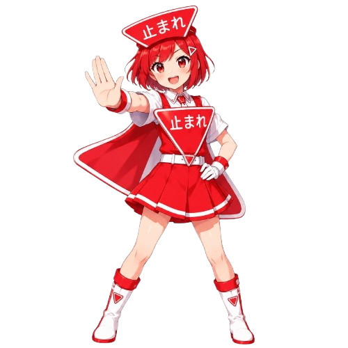

一時停止検知システムの使い方
※ ブラウザや端末によって、許可画面や表示が異なる場合があります。
速度 GPSから取得した移動速度（km/h）です。
揺れ 加速度センサーが検出した動きの大きさ（G）です。
認識率 AIが「止まれ」を認識した確率（%）です。
停止状態 準備中・判定中・走行中・停止完了など、現在の判定を表示します。
・カメラが映らない：ブラウザのカメラ使用許可を確認してください。
・速度が「--」のまま：位置情報の許可とGPS受信環境を確認してください。
・揺れが「--」のまま：端末・ブラウザが加速度センサーに対応しているか確認してください。
・標識を認識しない：標識を明るく、カメラに見やすく映してください。